合宿2日目、開始！
2日目の朝は、6:00～6:30に起床。 先生が各部屋を回るまでに、身支度をそれぞれのペースで進めてもらいました。
慣れない環境での朝ということもあり、はじめは少し眠そうな表情の子も。 それでも教室へ集まると、自然と話し声が広がり、朝の空気が一気に明るくなりました。
1日目の緊張も少しほぐれ、仲間との時間を楽しむ様子が見られた、穏やかなスタートでした。
ラジオ体操と、先生クイズの朝活
朝食の前に、教室でラジオ体操を行いました。 体を動かして目を覚まし、2日目のスイッチを入れました。
続いては、河村先生進行の朝活。 テーマは、先生たちについての「○×ゲーム・4択クイズ」です。 出題を通して先生の意外な一面を知りながら、教室全体で楽しく取り組みました。
クイズの答え合わせでは、先生もうれしそうな場面もあれば、思わず笑顔になる場面もあり、和やかな空気に。 子どもたちは真剣に考えたり、隣と相談したりしながら、先生への興味も深めていました。
朝から笑顔の多い時間となり、授業に入る前の良いウォーミングアップになりました。
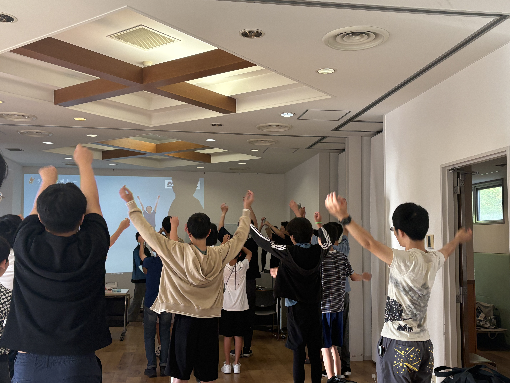
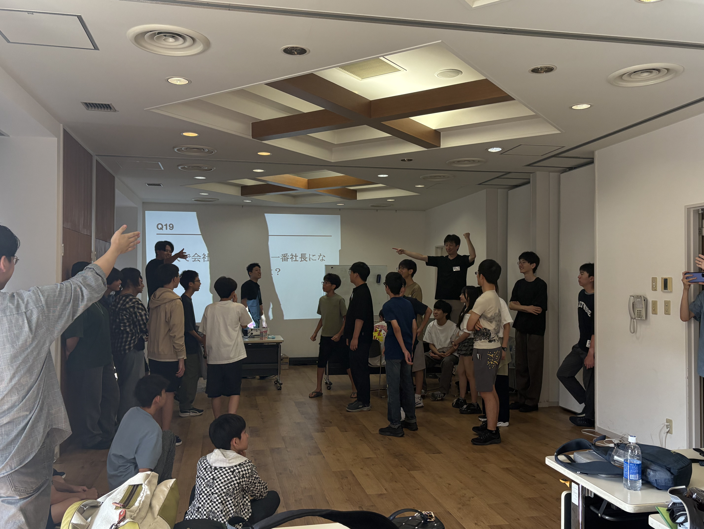
朝食タイム！
朝活のあとは、朝食へ。 プチバイキング形式で、食べたいものを自分で選んで準備していきました。
それだけでも元気が出たようで、「まだかな？」と順番を心待ちにする姿も見られました。
ほかのお客様もいらっしゃる会場でしたが、スタッフの指示をしっかり守り、周りへの配慮もできていました。 マナーよく、きちんと食事を取れていた様子が印象的でした。
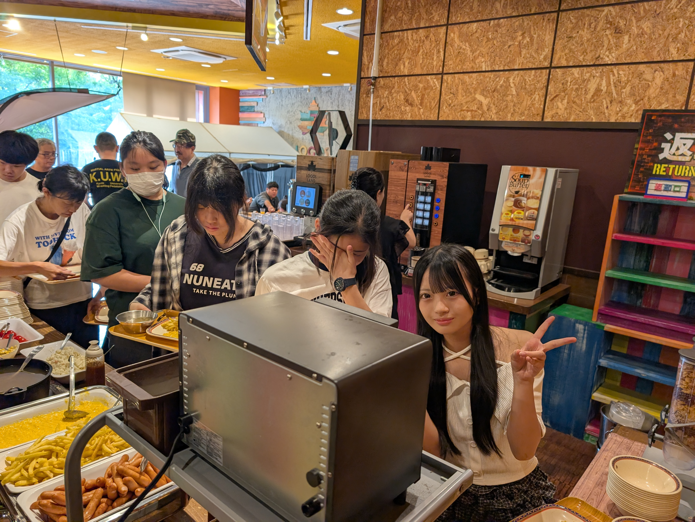
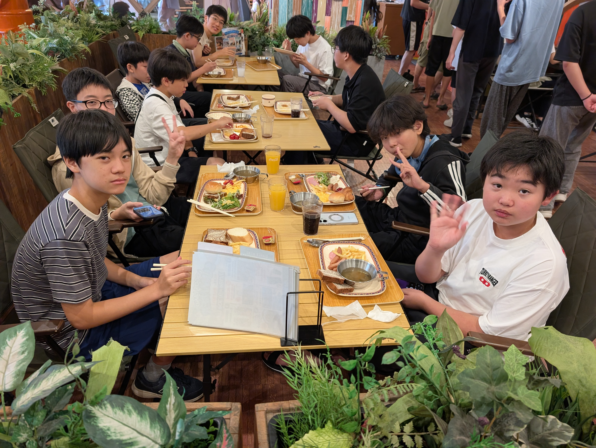
2日目の授業開始！戦略をコードに落とし込む
朝食のあとは、いよいよ授業スタート。 ここからは、今回の合宿で特に大切なテーマである 「戦略をコードに落とし込む」内容に入りました。
具体例を見ながら、「例のとおりにコードで表すには、まず何をすればよいか」 「何を準備し、何を判断していけばよいか」を考えつつ、実装を進めました。
Pythonの基礎文法のうち、どの機能（メソッド）を使えば実現できるかも、 ひとつずつ確認しながら取り組みました。
進む速さは一人ひとり異なりますが、解説の場面では内容を理解し、 「だからこれが必要なんだ」と納得してから次へ進めていました。 ただ手を動かすだけでなく、意味を確かめながら学べている様子が印象的でした。
午前の授業は3時間。 休憩を挟みながら上手にメリハリをつけ、戦略をコードへ落とし込む動きを一つずつ形にしていきました。
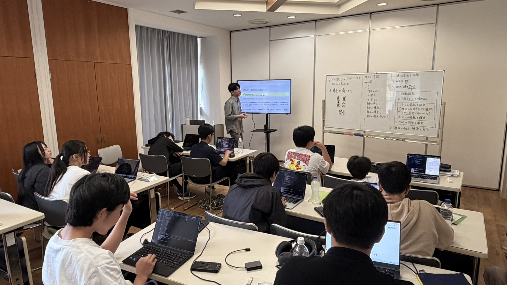
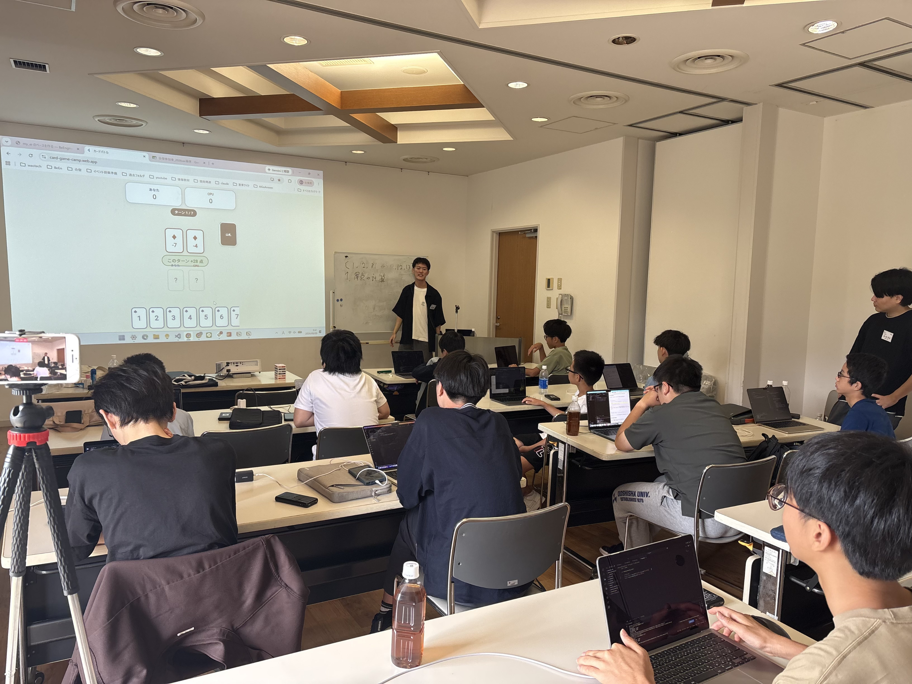
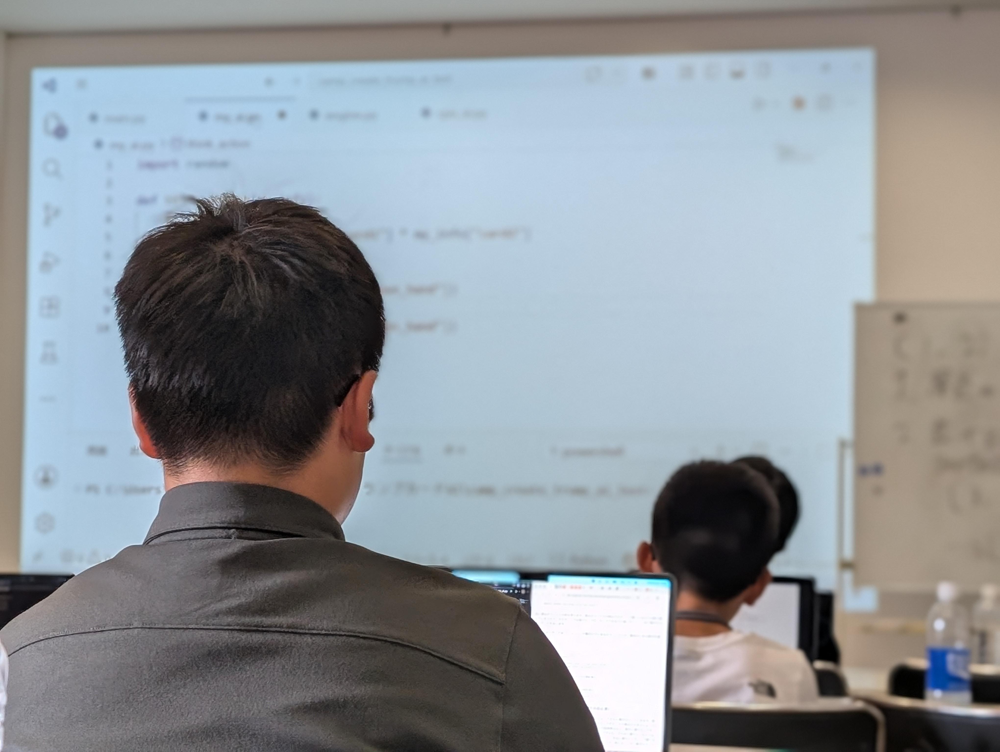
午前の頑張りのあとに、カレーライス！
午前中いっぱい頑張ったあとのご褒美として、みんなでカレーライスをいただきました。
朝食と同じく、自分が食べたい分だけよそうできます。 食欲も戻り、一気に元気が戻ってきた様子でした。
合宿らしい賑わいのなかで、おいしそうに食べ進める姿が印象的でした。
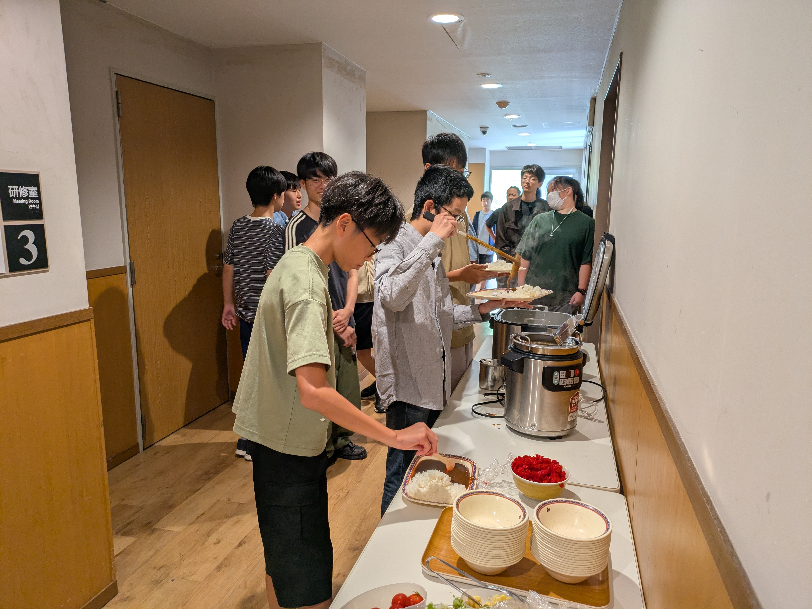
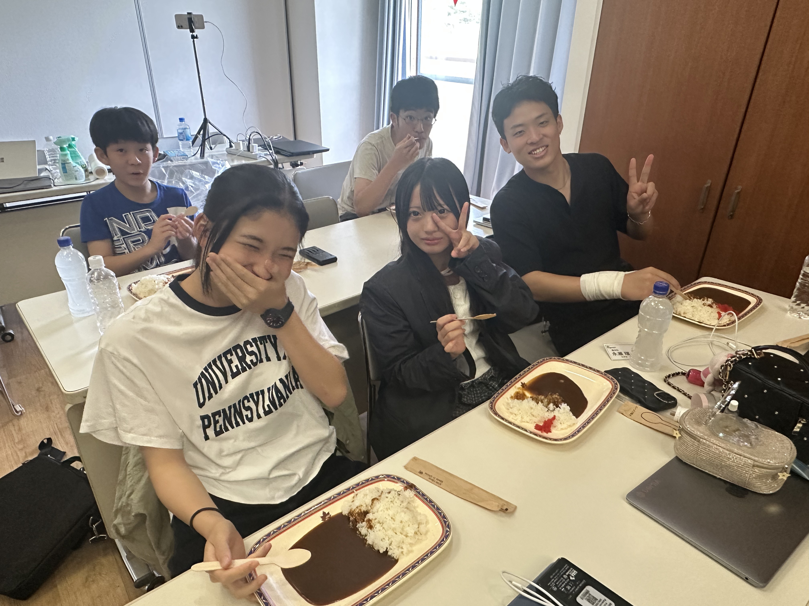
午後授業の前半戦！もう1つの戦略実装へ
午後は、さらに別の戦略をコードへ実装していく手順の確認からスタート。 あらためて具体的な戦略を例に挙げ、それを実現するためのコードを書く演習を行いました。
1ステップごとにポイントを確かめながら考える形式です。 「意外と簡単に書ける！」「これは学んだことのある文法？それとも新しい文法？」と、 子どもたちからも気づきの声が上がっていました。
やりたいことを整理し直し、これまでに習った文法のどれを当てはめるかを確認しながら進めました。 なかには「条件分岐」をキーワードに、自分なりの戦略を考え始めた生徒も。 午前の学びが午後の挑戦につながっている様子が見られ、頼もしい時間でした。
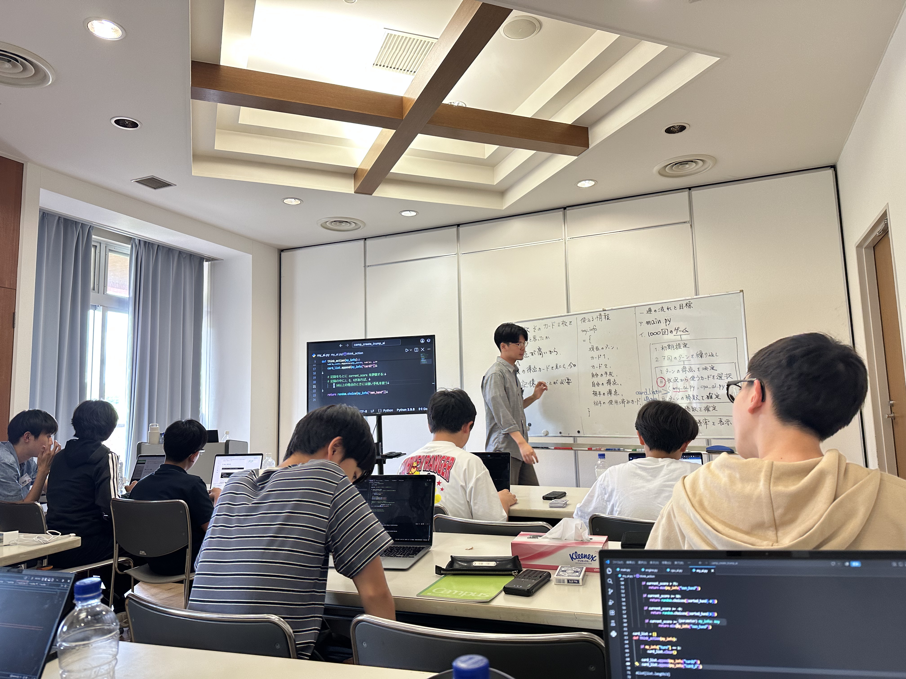
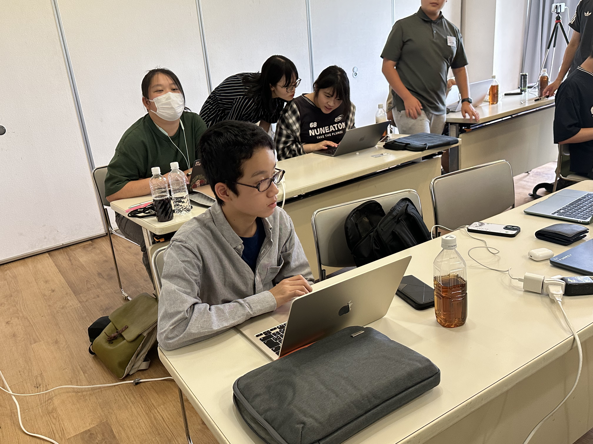
長丁場の小休止／ロゴスランド散策
2日目午後の授業の合間に、小休止としてロゴスランド内を探索し、気分をリフレッシュしました。
暑さや体調に気を配りながら、先生たちと一緒に園内を散歩。 遊具のある場所では思いきり体を動かし、思い思いに楽しんでいました。
ふわふわドームではみんなでトランポリンを楽しんだり、 ローラースライダーを勢いよく滑り降りたりと、笑顔の多い時間に。
プログラミングを学びに来つつも、いつもの教室とは違う環境を十分に満喫でき、 後半の授業に向けた良い気分転換になりました。 自然豊かな場所での体験も、合宿ならではの思い出のひとつです。
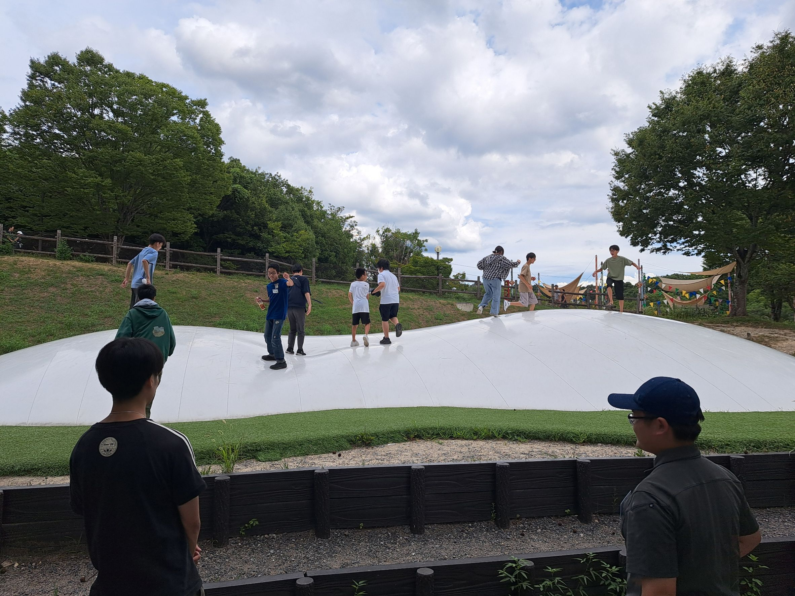
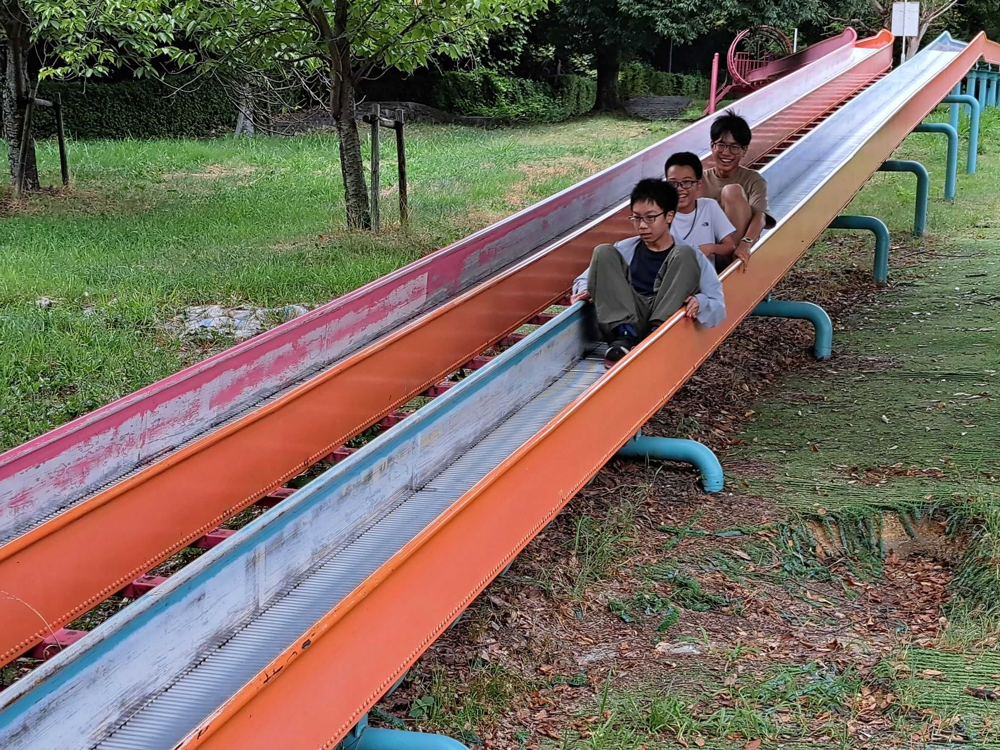
気分転換のあと、個人開発スタート！
ここまでの学びを活かし、オリジナルの戦略へと仕上げていくパートに入りました。 「戦略」を「コード」に反映するために、これまでの内容をどう使うか、 変数などの役割や動きは何だったかを、あらためて考えながら試行錯誤しました。
難しいのは、自分が思いついた戦略を、自分の力で組み立てていくこと。 手取り足取りの誘導がない分、じっくり時間をかけ、トライ＆エラーを重ねていきました。
「どうすれば、より勝てるコードだと判断できるか」 「どんな条件を入れ、どんな処理を書けばよいか」 「どの変数を見て、条件に反映するとよいか」 ——こうした問いを意識しながら、相手の動きや読み合いも踏まえたコーディングに取り組みました。
なかには、隣同士で確認しながら実装し、その都度ブラッシュアップしたり、 フィードバックを出し合ったりしてレベルを高めていったチームも。 一人で考える力と、仲間と高め合う姿の両方が見られた時間でした。
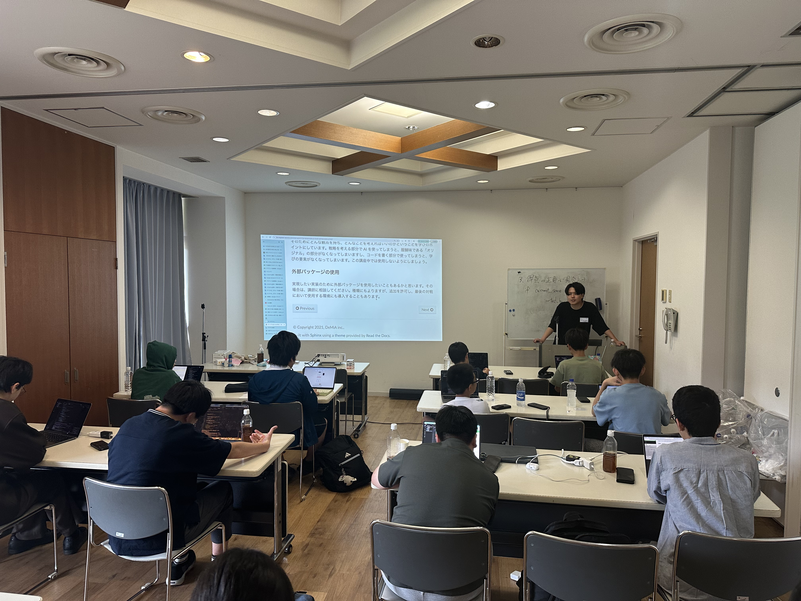
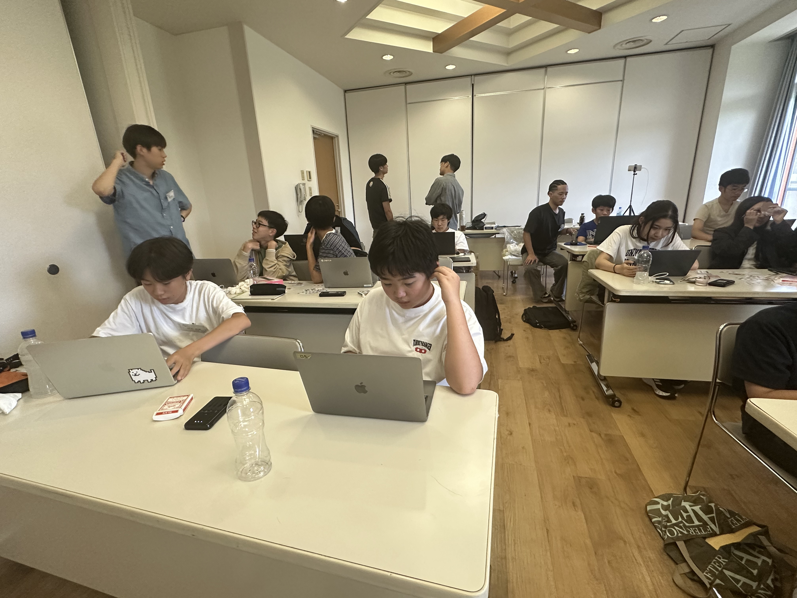
待ちに待ったBBQタイム🔥
合宿の大きな楽しみのひとつ、BBQをみんなで楽しみました。 各班のメンバーとスタッフが一緒になり、思いきり楽しむ時間です。
印象的だったのは、担当スタッフも生徒たちも、それぞれが自然と自分の役割を見つけ、 楽しみながら動いていたこと。合宿ならではの一体感が感じられる場面でした。
ときには班を超えて声をかけ合い、その場の空気をみんなで共有できたのも印象的です。 普段の教室では味わいにくい、非日常だからこその魅力が詰まったひとときでした。
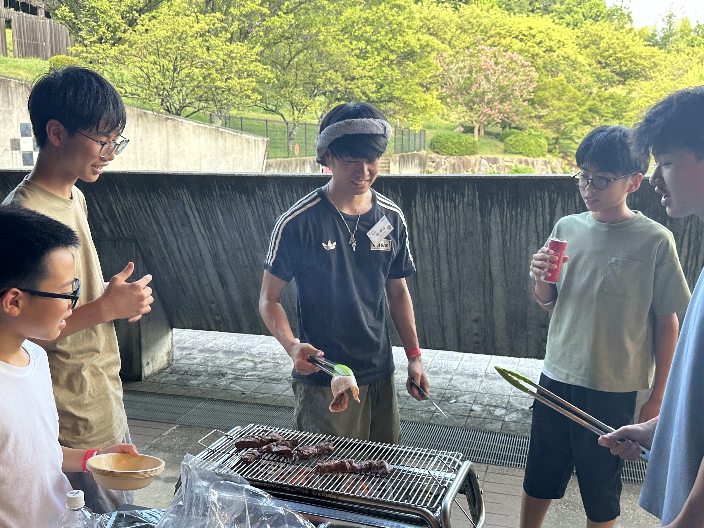
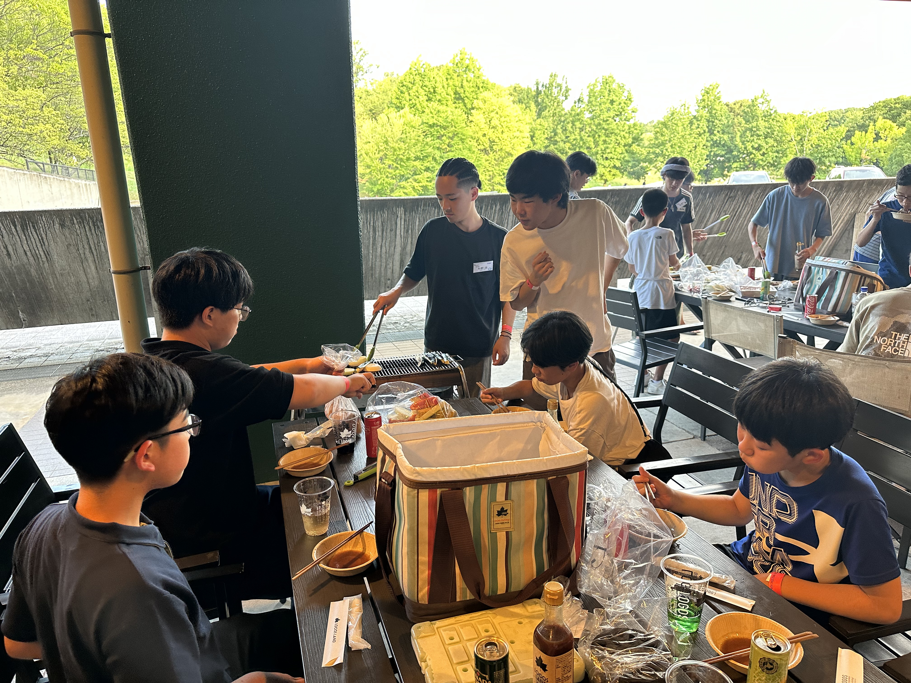
BBQ後は最終日に向けた確認会！そして……
楽しんだあとは、最終日に実施する【BeEnCup🏆】に向けた確認会を行いました。 ルールの確認はもちろん、各リーグに分かれ、そこでの上位（リーグ1位に加え、2位のなかから選ばれる上位2名）が決勝トーナメントへ進出します。
決勝トーナメントでは1回戦、準決勝、決勝と進み、今回の合宿で最も強いAIを開発した生徒が優勝となります。 強者の証として、順位に応じて金・銀・銅メダルを贈呈予定です。 初日にお披露目したときから、「ほしい！」と目を輝かせていた子も多く、モチベーションにつながっている様子でした。
この日の限られた時間を大切にしようと、本気で集中して個人開発に取り組む姿も印象的でした。 合宿らしい熱量が感じられる、充実した夜の時間になりました。
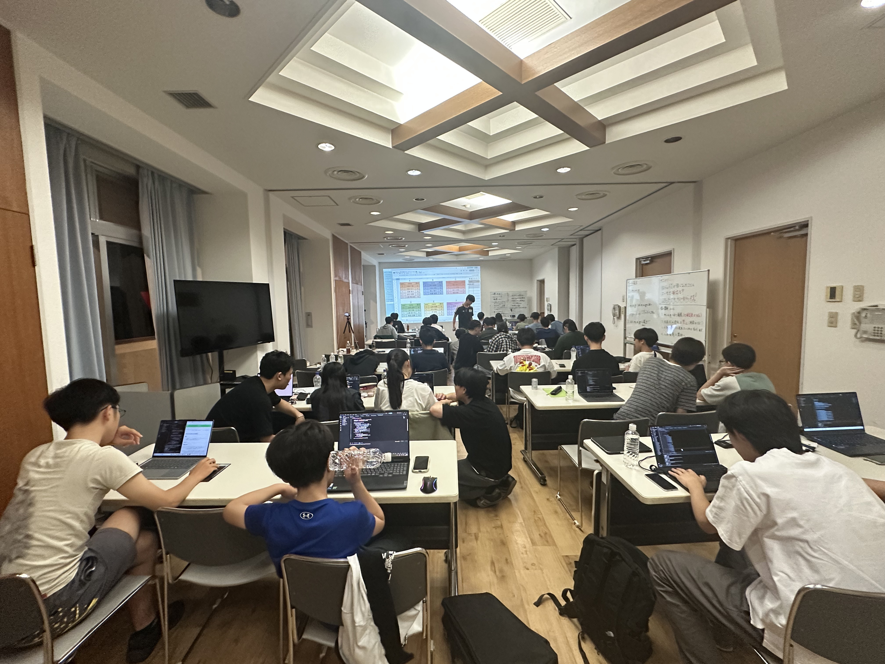
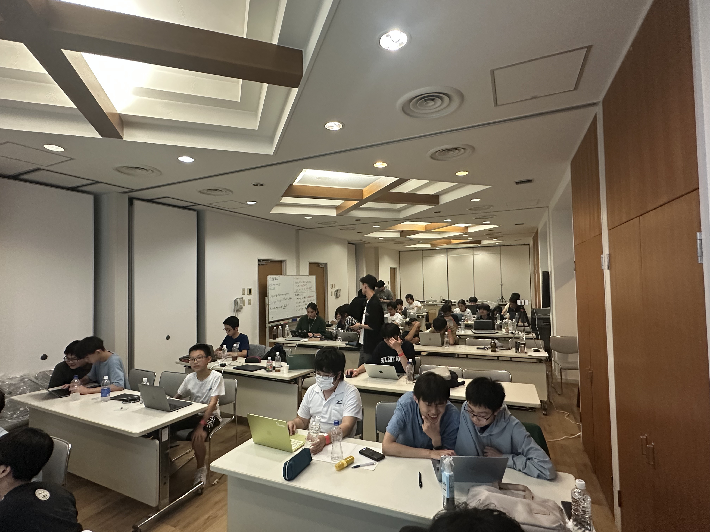
授業終了後は入浴タイム、最終日に向けた準備タイム
授業のあとは入浴へ。 入浴を終えると、最終日に備えて休むか、ギリギリまで個人開発に励むか——それぞれの選択で過ごす時間となりました。
昨年度の合宿でも遅くまで取り組む生徒はいましたが、今年はそれ以上の人数が夜遅くまで頑張る姿が見られました。 なかには、学校や塾の宿題に取り組む生徒も。
フリーな時間の使い方もさまざまでした。 先生に積極的に質問する子もいれば、自分のペースで着実に進める子もいて、それぞれに合う形で力を伸ばしていました。
これらの成果は、最終日のBeEnCupで決着します。 ドキドキもワクワクも交ざるなか、スタッフ一同も一人ひとりに向き合い、全力で挑戦できるよう準備を進めていきます。
合宿2日目、お疲れさまでした。いよいよ最終日へ！